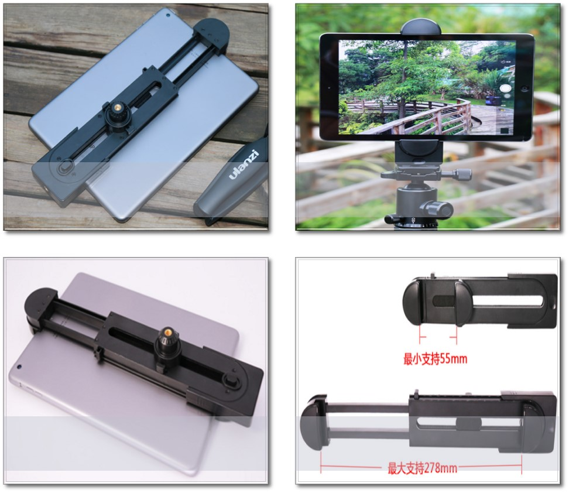
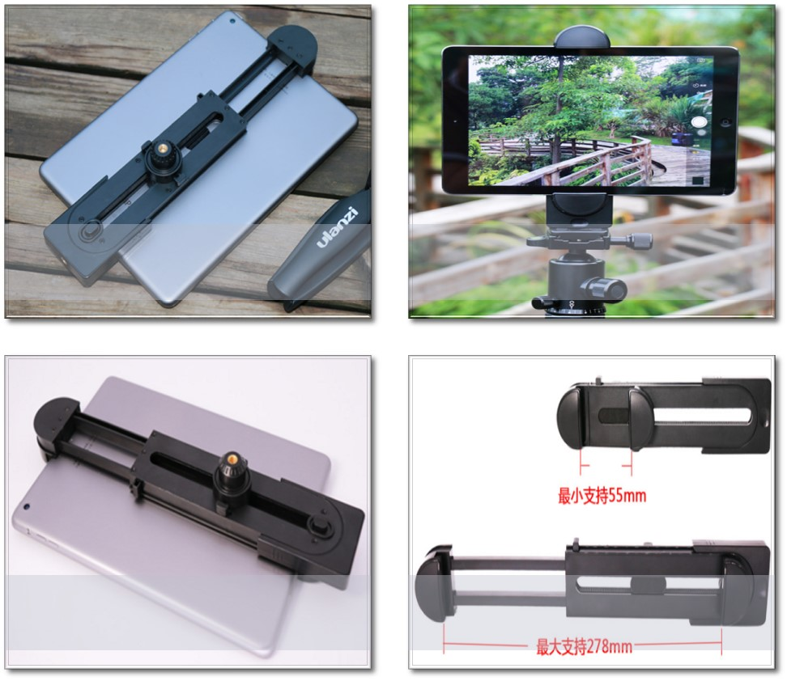
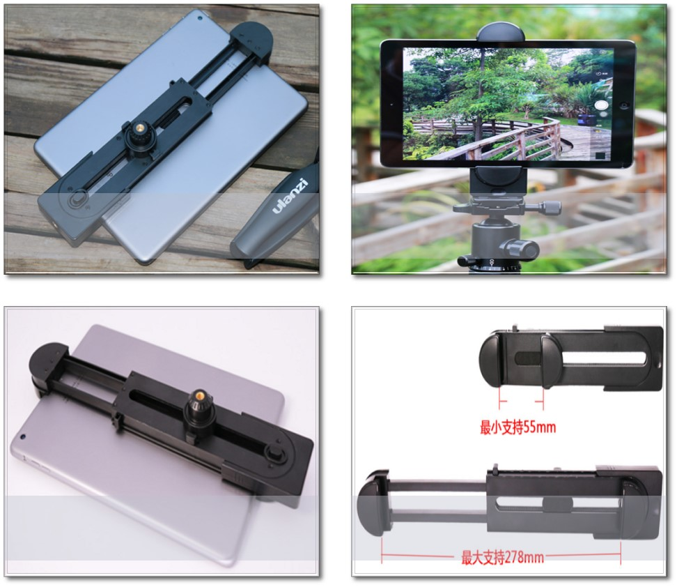

移动连接结构式通过结构设计形成移动轨迹的轨道结构，构件沿着一条固定轨道运动。最常用的轨迹是直线，轨道可以是空间或者平面曲线。常应用于抽屉、滑盖手机、滑动锯和拉杆天线的伸缩结构等

 

滑动轨道
安装固定
相关结构
移动连接结构式通过结构设计形成移动轨迹的轨道结构，构件沿着一条固定轨道运动。最常用的轨迹是直线，轨道可以是空间或者平面曲线。常应用于抽屉、滑盖手机、滑动锯和拉杆天线的伸缩结构等
